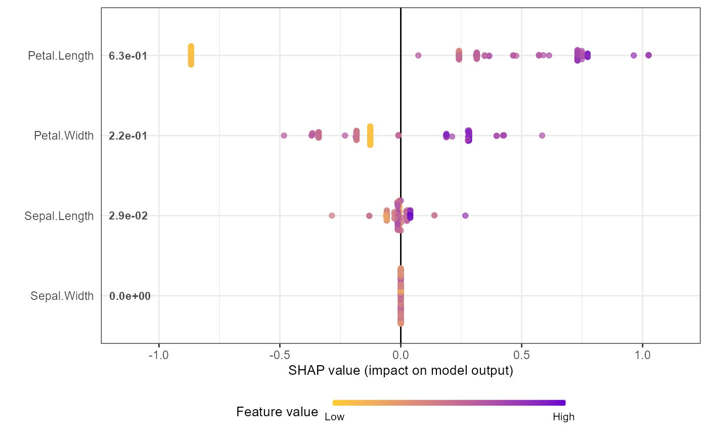

SHAP summary plot core function using the long format SHAP values
Source:R/SHAP_funcs.R
shap.plot.summary.RdThe summary plot (a sina plot) uses a long format data of SHAP values. The
SHAP values could be obtained from either a XGBoost/LightGBM model or a SHAP value
matrix using shap.values. So this summary plot function
normally follows the long format dataset obtained using shap.values. If you
want to start with a model and data_X, use
shap.plot.summary.wrap1. If you want to use a self-derived
dataset of SHAP values, use shap.plot.summary.wrap2. If a list
named new_labels is provided in the global environment (new_labels is
pre-loaded by the package as NULL), the plots will use that list to
label the variables, here is an example of such a list (the default labels):
labels_within_package.
shap.plot.summary( data_long, x_bound = NULL, dilute = FALSE, scientific = FALSE, my_format = NULL )
Arguments
| data_long | a long format data of SHAP values from
|
|---|---|
| x_bound | use to set horizontal axis limit in the plot |
| dilute | being numeric or logical (TRUE/FALSE), it aims to help make the test plot for large amount of data faster. If dilute = 5 will plot 1/5 of the data. If dilute = TRUE or a number, will plot at most half points per feature, so the plotting won't be too slow. If you put dilute too high, at least 10 points per feature would be kept. If the dataset is too small after dilution, will just plot all the data |
| scientific | show the mean|SHAP| in scientific format. If TRUE, label format is 0.0E-0, default to FALSE, and the format will be 0.000 |
| my_format | supply your own number format if you really want |
Value
returns a ggplot2 object, could add further layers.
Examples
data("iris") X1 = as.matrix(iris[,-5]) mod1 = xgboost::xgboost( data = X1, label = iris$Species, gamma = 0, eta = 1, lambda = 0, nrounds = 1, verbose = FALSE) # shap.values(model, X_dataset) returns the SHAP # data matrix and ranked features by mean|SHAP| shap_values <- shap.values(xgb_model = mod1, X_train = X1) shap_values$mean_shap_score#> Petal.Length Petal.Width Sepal.Length Sepal.Width #> 0.62935975 0.21664035 0.02910357 0.00000000shap_values_iris <- shap_values$shap_score # shap.prep() returns the long-format SHAP data from either model or shap_long_iris <- shap.prep(xgb_model = mod1, X_train = X1) # is the same as: using given shap_contrib shap_long_iris <- shap.prep(shap_contrib = shap_values_iris, X_train = X1) # **SHAP summary plot** shap.plot.summary(shap_long_iris, scientific = TRUE)shap.plot.summary(shap_long_iris, x_bound = 1.5, dilute = 10)# Alternatives options to make the same plot: # option 1: from the xgboost model shap.plot.summary.wrap1(mod1, X = as.matrix(iris[,-5]), top_n = 3)# option 2: supply a self-made SHAP values dataset # (e.g. sometimes as output from cross-validation) shap.plot.summary.wrap2(shap_score = shap_values_iris, X = X1, top_n = 3)